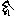
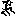

大正新脩大藏經 第54冊
No.2132 悉曇字記 (1卷)
【唐 智廣撰】
第 1 卷
No. 2132
悉曇字記(南天竺般若菩提悉曇)
悉曇天竺文字也。西域記云。梵王所製。原始垂則四十七言。寓物合成隨事轉用。流演支派其源浸廣。因地隨人微有改變。而中天竺特為詳正。邊裔殊俗兼習訛文。語其大較本源莫異。斯梗概也。頃嘗誦陀羅尼。訪求音旨多所差舛。會南天竺沙門般若菩提。齎陀羅尼梵挾。自南海而謁五臺寓于山房。因從受焉。與唐書舊翻兼詳中天音韻。不無差反。考覈源濫所歸悉曇。梵僧自云。少字學於先師般若瞿沙。聲明文轍將盡微致。南天祖承摩醯首羅之文。此其是也。而中天兼以龍宮之文。有與南天少異。而綱骨必同。健馱羅國憙多迦文獨將尤異。而字之由皆悉曇也。因請其所出研審翻註。即其杼軸科以成章。音雖少殊文軌斯在。効絕域之典弗尚詭異。以真言唐書召梵語髣髴而已。豈若觀其本文哉。俾學者不逾信宿而懸通梵音。字餘七千功少用要。懿夫聖人利物之智也。總持一文理含眾德其在茲乎。雖未具觀彼史誥之流別。而內經運用固亦備矣。然五天之音或若楚夏矣。中土學者方審詳正。竊書簡牘以記遺文(古謂楚書曰胡文者。案西域記。其閻浮地之南五天之境。楚人居焉。地周九萬餘里。三垂大海北背雪山。時無輪王膺運。中分七十餘國。其總曰五天竺。亦曰身毒。或云印度。有曰大夏是也。人遠承梵王。雖大分四姓。通謂之婆羅門國。佛現於其中。非胡土也。而雪山之北傍臨葱嶺。即胡人居焉。其字元製有異。良以境隣天竺文字參涉。所來經論咸依梵挾。而風俗則効習其文粗有增損。自古求請佛經多。於彼獲之。魚魯渾淆直曰胡文謬也)。其始曰悉曇。而韻有六。長短兩分字十有二。將冠下章之首。對聲呼而發韻。聲合韻而字生焉。即a 阿(上聲短呼)ā 阿(平聲長呼)等是也。其中有ṛ 紇里(二合)等四文。悉曇有之非生字所用今略也。其次體文三十有五。通前悉曇四十七言明矣。聲之所發則牙齒舌喉脣等合于宮商。其文各五。遍口之聲文有十。此中ra 囉(曷力遐三聲合也)。於生字不應遍諸章(諸章用之多屬第八及成當體重或不成字如後具論也)。llaṃ 羅聲全闕生用。則初章通羅除之一(除羅字羅鑒反)。餘單章除之二(除囉羅二字。即第二第三及第八第九第十章也。字非重成簡於第一。故云餘單章也)。重章除之三(重成也。即第四五六七及第十一已下四章也)。異章句末為他所用。兼下除之六(即盎迦章字牙齒舌等句末之第五字。為上四字所用。亦不可更自重故除之也)。自除之餘。各遍能生即ka 迦kha 佉等是也。生字之章一十有七。各生字殆將四百。則梵文彰焉。正章之外有孤合之文連字重成即字名也。有十一摩多。囉此猶點畫。兩箇半體兼合成文(阿阿等韻生字用十摩多。後字傍點名毘灑勒沙尼此云去聲。非為摩多。訖里章用一別摩多。里耶半體。用祗耶兼半體囉也)。
初章
將前三十四文。對阿阿等十二韻呼之。增以摩多。生字四百有八。即kā 迦(上)ka 迦(平)等是也。迦之聲下十有二文。並用迦為字體。以阿阿等韻呼之增其摩多。合于聲韻各成形也kha 佉ga 伽等聲下例之。以成于一章。次下十有四章。並用初章為字體。各隨其所增。將阿阿等韻對所合聲字呼之。後增其摩多。遇當體兩字將合。則容之勿生。謂第四章中重lla 羅。第五重vdha 嚩(房柯反)第六重mma 麼。第七重nna 那等是也。十一已下四章。如次同上之四章同之除。
第二章
將半體中祇耶。合於初章迦迦等字之下。名kya 枳也kyā 枳耶。生字三百九十有六(枳字幾爾反。今詳祗耶當是耶字之省也。若然亦同除重。唯有三百八十四。先書字體三百九十六。然將祗耶合之後加摩多。夫重成之字。下者皆省除頭也。已下並同也)。
第三章
將ra 囉字。合於初章迦迦等字之下。名kra 迦(上)略(上)krā 迦(平)略(平)生字三百九十有六(上略力價反。下略力迦反。上迦下迦並同略之平上取聲他皆効之也)。
第四章
將la 攞字。合初章字之下。名kla 迦攞klā 迦攞。生字三百八十有四(攞字洛可反)。
第五章
將va 嚩字。合初章字之下。名kva 迦嚩(上)kvā 迦嚩(平)生字三百八十有四(嚩字房可反)。
第六章
將ma 麼字。合初章字之下。名kma 迦麼kmā 迦麼。生字三百八十有四。
第七章
將na 曩字。合初章字之下。名kna 迦那knā 迦那。生字三百八十有四。
第八章
將半體囉。加初初章字之上。名rka 阿勒迦rkā 阿勒迦。生字三百九十有六(勒字力德反下同)。
第九章
將半體囉。加第二章字之上。名rkya 阿勒枳耶rkyā 阿勒枳耶。生字三百八十有四(若祗耶是耶省亦同除重)。
第十章
將半體囉。加第三章字之上。名rkra 阿勒迦略rkrā 阿勒迦略。生字三百九十有六(略平上)。
第十一章
將半體囉。加第四章字之上。名rkla 阿勒迦羅rklā 阿勒迦羅。生字三百八十有四。
第十二章
將半體囉。加第五章字之上。名rkva 阿勒迦嚩rkvā 阿勒迦嚩。生字三百八十有四。
第十三章
將半體囉。加第六章字之上。名rkma 阿勒迦麼rkmā 阿勒迦麼。生字三百八十有四。
第十四章
將半體囉。加第七章字之上。名rkna 阿勒迦那。rknā 阿勒迦那。生字三百八十有四。
第十五章
以ka 迦ca 遮ṭa 吒ta 多pa 波等句末之。第五字。各加於當句前四字之上。及初句末字。加後耶等九字之上。名ṅka 盎迦ñca 安遮ṇṭa 安吒nta 安多mpa 唵波ṅya 盎耶等。其必不自重。唯二十九字。不由韻合名為異章。各用阿阿等韻呼之。生字三百四十有八(盎字阿黨反。安字並阿亶反。唵字阿感反)。
第十六章
用迦等字體。以別摩多合之。謂之kṛ 訖里。成字三十有四(或有加前麼多得成字用。非遍能生。且據本字言之。今詳訖里之麼多祗是悉曇中里字也)。
第十七章
用迦等字體。參互加之有三十三字。隨文受稱。謂ska 阿索迦等。各用阿阿等韻呼之。生字三百九十有六。
第十八章
正章之外有孤合之文或當體兩字重之但依字大呼(謂多闍吒拏等字各有重成也)。或異體字重之即連聲合呼(謂悉多羅等是也)。或不具通麼多。止為孤合之文(即瑟吒羅等字。有通三五麼多也)。或雖生十二之文。而字源不次其猶之孤(即阿悉多羅等也)。或雖異重不必依重以呼之(此五句之末字。加其句之初。即名盎迦等屬前章也)。或兩字聯聲。文形其後聲彰其前(如麼盎迦三合等字。似云莾迦等也)。或字一而名分(如沙字有沙孚（府珂反）二音猶假借也)。或用麼多之文。重增其麼多。而音必兼之(如部林二合字。從裒（菩侯反）婁（力鉤反）與第十一摩多也)。或形非麼多獨為嚴字之文(如字之上有仰月之畫也)。或有所成而異其名(謂數字重成一字。而其下必正呼。中上連合短呼之。不必正其音。如上娑下迦稱阿索迦等也)。或有其聲而無其形(此即阿索迦章等字字則無阿。讀之皆帶其音也)。或不從字生。獨為半體之文(如怛達祗耶等用則有之字體無也)。或字有所闕。則加怛達之文。而音掣呼之(如迦佉等字下有達畫則云秸（吉八反）稧（苦八反）等也)。或源由字生增于異形(如室梨字猶有奢羅之象。錯成印文。若篆籀也)。或考之其生。異之其形(訖里俱羅俱婁等從迦之省。及胡盧等文。麼多之異猶艸隸也)。斯則梵書之大觀焉。
悉曇字記
na ma sa rva jñā ya si
娜 麼 娑(上) 囉嚩(二合) 社若(而也反)(二合) 也 悉
ddhāṃ
曇(去聲)(已上題目)
悉曇
a 短阿字(上聲短呼音近惡引)。
ā 長阿字(依聲長呼別體作ā )。
i 短伊字(上聲聲近於翼反別體作ī )。
ī 長伊字(依字長呼別體作ī )。
u 短甌字(上聲聲近屋別體作ū )。
ū 長甌字(長呼別體作ū )。
e 短藹字(去聲聲近櫻係反)。
ai 長藹字(近於界反)。
o 短奧字(去聲近污別體作o )。
au 長奧字(依字長呼別體作ū )。
aṃ 短暗字(去聲聲近於鑒反別體作aṃ )。
aḥ 長疴字(去聲近惡)。
右悉曇十二字為後章之韻。如用迦字之聲。對阿伊甌等十二韻呼之。則生得下迦機鉤(矩侯反)等十二字。次用佉字之聲。則生得佉欺丘(區侯反)等十二字。次生伽其求(瞿侯反)等十二字。已下例然。且先書短迦字一十二文。從第二字已下加其麼多。即字形別也。用悉曇韻呼之。則識其字名也。佉伽已下至叉字例然。以成一章。舊云十四音者。即於悉曇十二字中甌字之下。次有ṛ 紇里ṝ 紇梨ḷ 里ḹ 梨四字。即除前悉曇中最後兩字。謂之界畔字也餘則為十四音。今約生字除紇里等四字也。
體文(亦曰字母)
ka 迦字(居下反音近姜可反)。
kha 佉字(去下反音近去可反)。
ga 迦字(渠下反輕音音近其下反。餘國有音疑可反)。
gha 伽字(重音渠我反)。
ṅa 哦字(魚下反音近魚可反。餘國有音ṅa 講反。別體作ṅa 加麼多)。
已上五字牙聲。
ca 者字(止下反音近作可反)。
cha 車字(昌下反音近倉可反。別體作ccha )。
ja 社字(杓下反輕音音近作可反。餘國有音而下反別體作jā )。
jha 社字(重音音近昨我反)。
ña 若字(而下反音近若我反。餘國有音壤。別體作ña )。
已上五字齒聲。
吒字(卓下反音近卓我反。別體作ṭa 加麼多)。
ṭha 侘字(拆下反音近折我反別體作rṭha )。
ḍa 荼字(宅下反輕音。餘國有音搦下反)。
ḍha 荼字(重音音近幢我反)。
ṇa 拏字(搦下反音近搦我反。餘國有音拏講反別體作ṇa 加麼多)。
已上五字舌聲。
ta 多字(怛下反音近多可反。別體作ta )。
tha 他字(他下反音近他可反)。
da 陀字(大下反輕音餘國有音陀可反)。
dha 陀字(重音音近陀可反)。
na 那字(捺下反音近那可反。餘國有音音曩。別體作na )。
已上五字喉聲。
pa 波字(缽下反音近波我反)。
pha 頗字(破下反音近破我反)。
ba 婆字(罷下反輕音。餘國有音麼字下不尖異後)。
bha 婆字(重音薄我反)。
ma 麼字(莫下反音近莫可反。餘國有音莽)。
已上五字脣聲。
ya 也字(藥下反音近藥可反又音祗也反譌也)。
ra 囉字(曷力下反三合。卷舌呼囉)。
la 羅字(洛下反音近洛可反)。
va 嚩字(房下反音近房可反。舊又音和。一云字下尖)。
śa 奢字(舍下反音近舍可反)。
sa 沙字(沙下反音近沙可反。一音府下反)。
a 娑字(娑下反音近娑可反)。
ha 訶字(許下反音近許可反。一本音賀)。
llaṃ 濫字(力陷反音近郎紺反)。
kṣa 叉字(楚下反音近楚可反)。
已上十字遍口聲。
右字體三十五字。後章用三十四字為體。唯濫字全不能生。餘隨所生。具如常章論之。
第一章
ka 迦kā 迦。
右初章生字四百有八。先於字母中。每字平書一十二文。次將麼多如次點之。則字形別也。用悉曇韻呼之。則識其字名也。其麼多有別體者。任逐便用之。皆通。此初章為後相次六章之體。先書此章字。但除重及囉羅三字。合三十二字。所生三百八十四字。即將ya 也等字。如次於下合之。後加麼多則字字別也。將悉曇十二韻相對呼之。則識其字名也。恐未曉悟。更每章頭書一二數字。以為規準。後皆效此。
第二章
kya 己也(二合)kyā 紀耶(二合)kyi 紀以(二合)kyī 紀夷(二合)kyu 矩庾(二合)kyū 矩俞(二合)kye 枳曳(二合)kyai 枳[兀*骨](與蓋反)kyo 句俞(二合)kyau 句曜(庾告反)kyaṃ 矩焰kyaḥ 迦(上)夜(已上第二章初字所生一十二文。後皆效此。讀者連帶。轉聲調韻呼之)。
第三章
kra 迦(上)略(上)krā 迦(平)略(平)kri 己里krī 機釐kru 苟漊krū 鉤婁(呂鉤反)(餘同上)。
第四章
kla 迦攞(上)klā 迦攞(平)。
第五章
kva 迦嚩(上)kvā 迦嚩(平)。
第六章
kma 迦麼kmā 迦摩。
第七章
kna 迦娜knā 迦娜。
第八章
rka 阿勒迦(上)rkā 阿勒迦(平)rki 伊(上)力紀rkī 伊力機rku 歐鹿苟(上)rkū 歐鹿鉤(平)rke 醫力葪rkai 醫力介rko 阿勒勾rkau 阿勒憍(脚號反)rkaṃ 阿勒劍rkaḥ 阿勒迦(去)。
右第八章字同初章。但用半體囉。加諸字上。後點麼多也。又此章為後相次六章字體。同前第二已下也。但加半體囉也。
第九章
rkya 阿勒已也rkyā 阿勒枳耶。
第十章
rkra 阿勒迦略(上)rkrā 阿勒迦囉。
第十一章
rkla 阿勒迦攞rklā 阿勒迦攞。
第十二章
rkva 阿勒迦嚩(上)rkvā 阿勒迦嚩(平)。
第十三章
rkma 阿勒迦麼rkmā 阿勒迦摩。
第十四章
rkna 阿勒迦娜rknā 阿勒迦娜。
第十五章
ṅka 盎迦(上)ṅkā 盎迦(平)ṅki 應(上)紀ṅkī 應機ṅku 蓊苟(俱口反)ṅkū 蓊鉤(俱候反)ṅke 蘡(於項反)荊ṅkai 蘡介ṅko 擁句ṅkau 擁憍(脚傲反)ṅkaṃ 盎鑑ṅkaḥ 盎迦(去)(已上伽字上用ṅa 盎字。冠之生十二字)。
ṅkha 盎佉(上)ṅkhā 盎佉(平)(生十二字同上迦字用麼多及呼字轉聲法。下同)。
ṅga 盎伽(上)ṅgā 盎佉(平)(生十二字同上)。
ṅkha 盎伽(上聲)ṅkhā 盎佉(平重)(生十二字同上)。
ṅa 字(並將冠上四字之首。不復自重。後皆效此。已上牙聲之字。皆用盎聲)。
ñca 安者ñcā 安遮(生十二字同上此ña 是ña 字之省)。
ñcha 安車(上)ñchā 安車(生十二字)。
ñjā 安社ñjā 安闍(生十二字)。
ñjā 安社(重)ñjā 安闍(重)(生十二字)。
ña 字(為上四字所用。不可更自重。已上齒聲之字同用安音阿亶反)。
ṇṭa 安吒(上)ṇṭā 安吒(平)(生十二安字)。
ṇṭha 安侘(上)(丑加反)ṇṭhā 安侘(生十二字)。
ṇḍa 安茶(上)ṇḍā 安茶(生十二字)。
ṇḍha 安茶(上重)ṇḍhā 安茶(重音)(生十二字)。
ṇa 字(為上四字所用。不可更自重。此字有自重者便屬別章則大呼。拏音非盎拏也。餘並同此也。已上舌聲之字同用安聲)。
nta 安多(上)ntā 安多(生十二字)。
ntha 安他(上)nthā 安他(生十二字)。
nda 安挓(上)ndā 安挓(生十二字)。
ndha 安陀(上重)ndhā 安陀(重音)(生十二字)。
na 字(為上四字所用。不可更自重。若重屬別章。已上喉聲之字同用安聲)。
mpa 唵跛mpā 唵跛(生十二字)。
mpha 唵頗(上)mphā 唵頗(平)(生十二字)。
mba 唵婆(上)mbā 唵婆(生十二字)。
mbha 唵婆(上重音)mbhā 唵婆(重)(生十二字)。
ma 字(為上四字所用。不更自重。已上脣聲之字同用唵聲)。
ṅya 盎也ṅyā 盎耶(生十二字)。
ṅra 盎攞(上)ṅrā 盎囉(生十二字)。
ṅla 盎攞(上)ṅlā 盎攞(生十二字)。
ṅva 盎攞(上)ṅvā 盎嚩(平)(生十二字)。
ṅsā 盎捨ṅsā 盎奢(生十二字)。
ṅṣa 盎灑ṅṣā 盎沙(生十二字)。
ṅśa 盎娑(上)ṅśā 盎娑(平)(生十二字)。
ṅha 盎訶(上)ṅhā 盎訶(生十二字)。
ṅkṣa 盎叉(上)ṅkṣā 盎叉(生十二字)。
右此章字兩字重成不得依字呼之。異於諸章故云異章。然盎安等將讀之際。潛帶其音亦不分明稱盎安也。
第十六章
kṛ 訖里khṛ 乞里gṛ 佉里ghṛ 佉里(重音)ṅṛ 齕里cṛ 齒里cchṛ 質里jṛ 實里jhṛ 實里(重音)ñṛ 日里(已下並同吉里反。但用於下合之。讀者取其聲勢。亦有用麼多得重成字用。非遍能生也)。
第十七章
ska 阿索迦(生十二字)skha 阿索佉(已下各生十二字)dga 阿拕伽dgha 阿拕伽(重)ṅktra 盎迦怛囉。
vca 阿嚩遮vcha 阿伐車vja 阿伐社vjha 阿伐闍(重)jña 阿社若。
ṣṭa 阿瑟吒ṣṭha 阿瑟侘dḍa 阿拕荼dḍha 阿拕荼(重)ṣṇa 阿瑟拏。
sta 阿薩多stha 阿薩他vda 阿伐拕vdha 阿伐拕(重)rtsna 阿勒多薩那。
spa 阿薩波spha 阿薩頗dba 阿拕婆dbha 阿拕婆(重)rkṣma 阿勒叉麼。
rkṣvya 阿勒叉微耶rkṣvrya 阿勒叉微釐耶lta 阿刺多tkva 阿多迦嚩ṭśa 阿吒奢ṭṣa 阿吒沙阿沙訶vkṣa 阿婆叉(已上一章重文讀之。皆帶阿聲連促呼之。此章亦除濫字。又合娑訶字唯三十三字。皆通十二字加麼多也。其於字母不次者。分入後章)。
第十八章孤合之文
pta 阿跛多ṭka 阿吒迦dsva 阿娜薩嚩ṭṣchra 阿吒瑟車囉。
右此章字類流派無盡。或通三五麼多讀之並同上章。當體重兩tta 多社ṭṭa 吒ṇṇa 拏nna 那等字(並依本字大呼多。則不得云多多也)聯聲字mṅka (上麼下盎迦。後字之聲入於前。似云莽迦也。用此章字皆然)兩重麼多字bhrūṃ 部林(去)chrūṃ 齒林(去)hūṃ 吽(已上字有第六及第十一麼多讀之皆帶兩聲也。此是第六麼多分布於傍也)半體文多達又作(皆同也)秖耶(當是耶字。之省也)印文字śṛī (是室梨字西域為印也)。此類甚多略出其狀也。前敘云囉於生字不應遍諸章。謂第二第四五六七章用之。其字則屬第八章也。若第三及第八章用之成當體重。非此章字也。若第九已下四章用之。則更重重全非字也。其囉字當體重。及重章中當體重。書者至此但存一重字。不須生十二也。雖或有用處亦通三五麼多。非遍能生故不入此生字之內。緣存一當體重字故。云容之勿生也。後第十八云或當體兩字重之。但依字大呼。謂多闍吒拏等。各有重成也。等者等餘字母。並有重成之用也。但大呼之。不得言多多囉囉等也。
悉曇字記